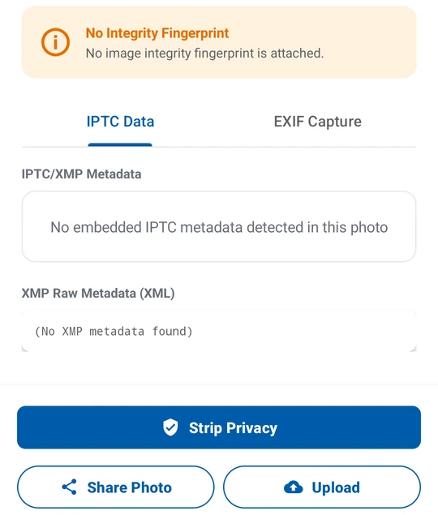

Nettoyage des métadonnées privées
Inspectez et supprimez certaines données EXIF, IPTC et XMP avant de partager une copie traitée.
Le problème résolu: Une photo peut contenir un lieu, un appareil et d’autres métadonnées qui ne doivent pas figurer dans chaque livraison.

Ce que vous pouvez faire
- Inspecter les catégories EXIF, IPTC et XMP suivies
- Supprimer certaines métadonnées privées d’une copie photo traitée
- Séparer le fichier original du flux de sortie nettoyé
Options disponibles
- Catégories de lieu, d’appareil et autres métadonnées suivies par le flux de nettoyage
Entrées prises en charge
- Photos locales contenant des métadonnées EXIF, IPTC ou XMP
Sorties
- Copie photo traitée dont les métadonnées choisies ont été supprimées
Flux de travail
- Sélectionner la photo à inspecter
- Examiner les catégories de métadonnées disponibles pour le nettoyage
- Lancer le nettoyage et utiliser la copie pour la livraison
Limites
- Le nettoyage dépend des catégories implémentées dans la version actuelle ; vérifiez la sortie avant publication.
Questions fréquentes
Le nettoyage modifie-t-il ma photo originale ?
Le flux documenté crée des données photo traitées pour la gestion et la livraison. Conservez l’original si nécessaire et vérifiez le résultat enregistré.